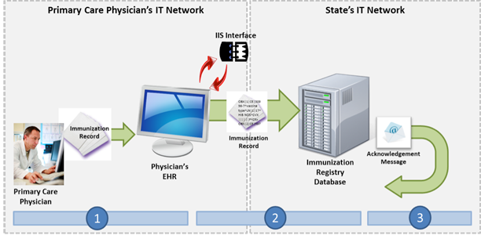

NwHIN 1.0 Portfolio > Scenarios > Submitting Immunization Data to Public Health
Submitting Immunization Data to Public Health
A physician sends a patient’s immunization record to the state’s immunization information system:

Parents of a one-year old take their child to his primary care physician to be immunized in accordance with Centers for Disease Control and Prevention (CDC) recommendations. Upon completion of the varicella and MMR vaccines, the primary care physician updates the patient’s electronic health record (EHR) and accesses the state’s Immunization Information System (IIS) interface from within the EHR system. The physician then sends the immunization record to the IIS.
 |
Meaningful Use Stage 2 Objectives related to immunization registries: Capability to submit electronic data to immunization registries or Immunization Information Systems and actual submission except where prohibited and in accordance with applicable law and practice. (Meaningful Use Menu Set 16 for EPs, Meaningful Use Menu Set 13 for EH/CAHs) |
Common workflow steps for this scenario:
 |
The primary care physician enters the immunization data into his EHR and then accesses the state’s IIS through the EHR, which is possible because the physician practice has signed a user agreement with the state, and the EHR vendor supports HL7 v.2.5.1 and has a Secure File Transfer Protocol (SFTP) interface. | |
 |
The EHR automatically uploads the physician’s file, which has been properly formatted according to HL7 v.2.5.1 Implementation Guide for Immunization Messaging, using CVX codes, into the state’s SFTP system. The state’s system processes and stores the immunization record in the state’s immunization registry database. | |
 |
The IIS sends an acknowledgement message via email to the primary care physician’s EHR indicating that the immunization record was successfully stored. |
NwHIN 1.0 specifications and resources recommended for scenario:
Content StructureGuidance that specifies how to structure health information to ensure proper exchange |
|
Vocabulary & Code SetsSpecifications that identify common naming convention necessary for proper health information exchange |